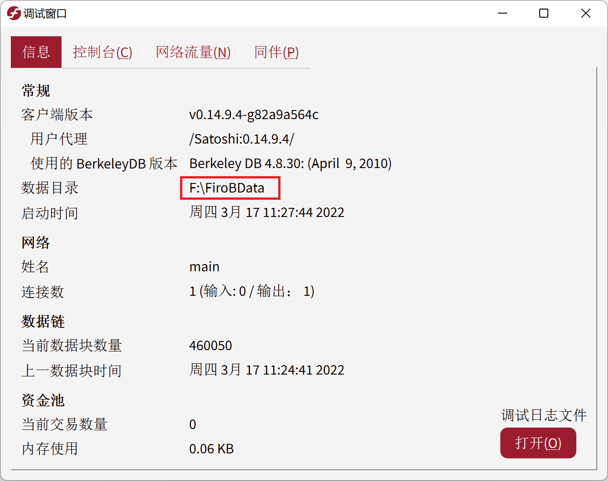
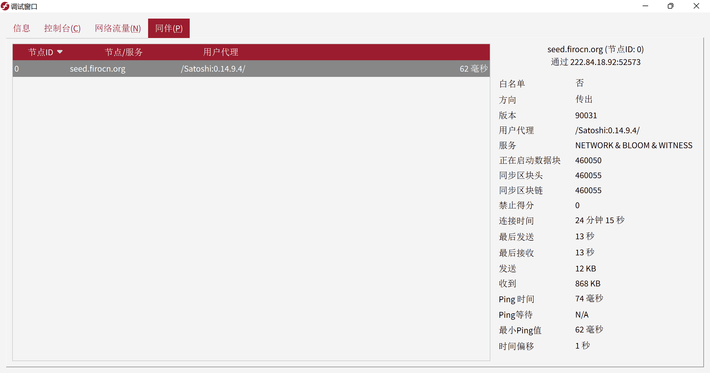

Firo 中国节点
加快同步速度
如果你的全节点钱包同步很慢，可以添加中国节点 seed.firocn.org 加快同步速度。
可以直接在控制台添加（下次打开钱包失效）
在顶部菜单点击「帮助」，点击「调试窗口」，点击「控制台」选项卡。
输入：
addnode seed.firocn.org add

也可以写进配置文件（永久有效）
进入你的 Firo 钱包数据目录。

创建或编辑 firo.conf 文件。
添加一行：
addnode=seed.firocn.org

保存后，重新打开钱包，在调试窗口的同伴选项卡中应该就能够看到已连接上中国节点了。

同步愉快！